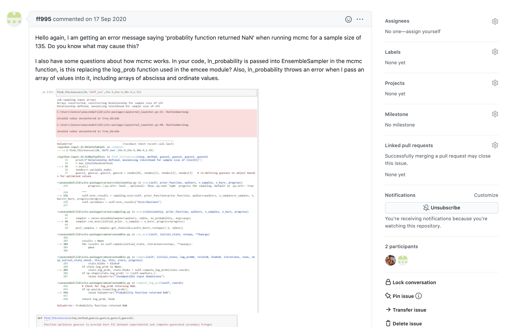
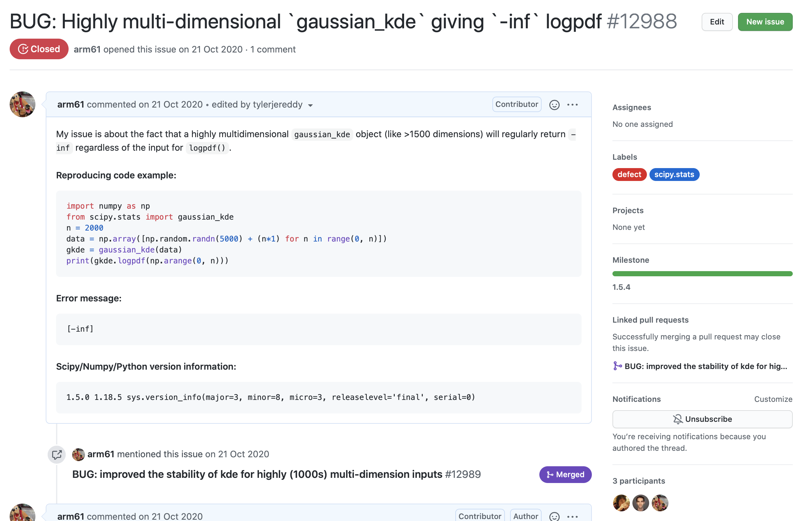
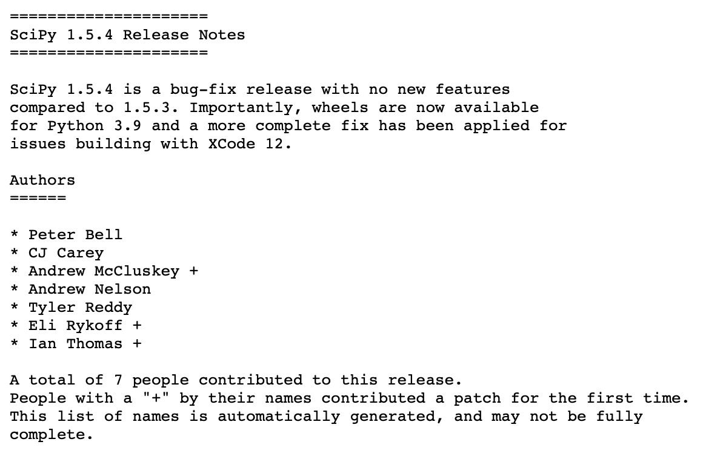
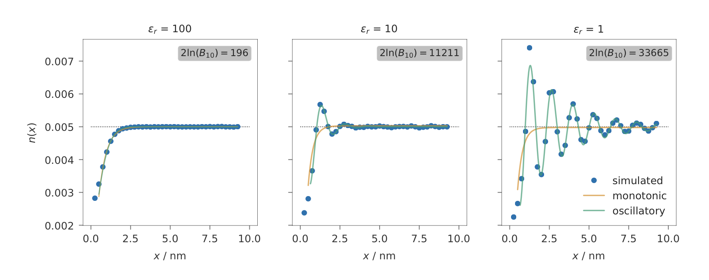
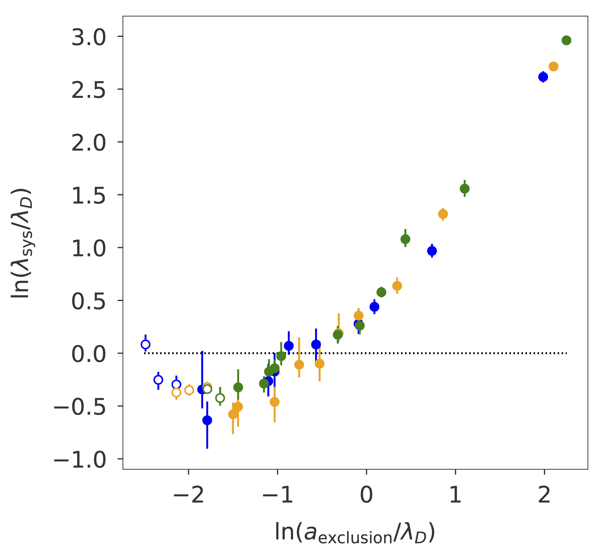

uravu: making Bayesian modelling easy(er)
DRAM Entertainment — 2021/02/25
uravu Investigates Relationships
from uravu.relationship import Relationship
modeller = Relationship(function, x, y, ordinate_error=yerr)
modeller.max_likelihood('mini')
modeller.mcmc()
modeller.nested_sampling()
scipyemcee packagedynesty packageuravu can accept three types of ordinate data:y and yerrscipy.stats.rv_continuous objectsuravu.distribution.Distribution objectsuravu uses an \(N\)-dimensional Gaussian kernel density estimation to describe the data
scipy Bug
scipy Contribution


 \[ 2\ln [B_{21}] = 5.01\pm0.29 \]
\[ 2\ln [B_{21}] = 5.01\pm0.29 \]